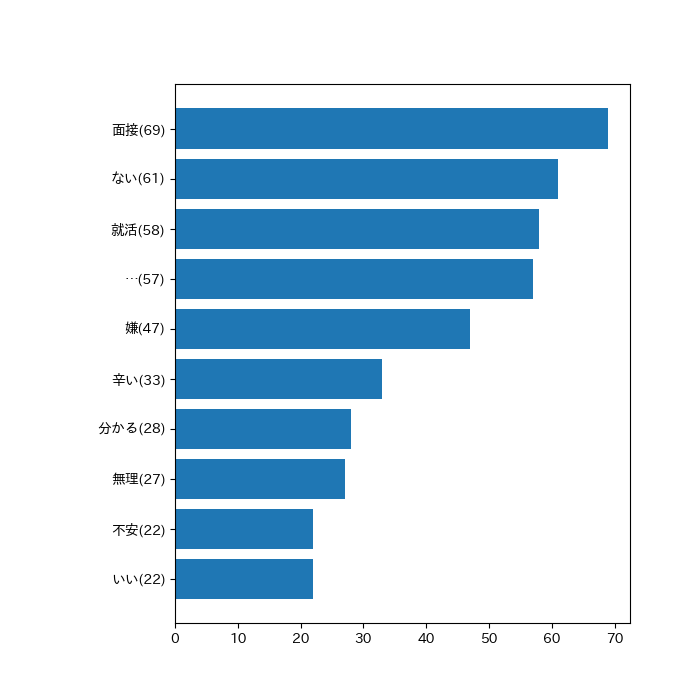

TwiGather
「{{ '%s' | format(q) }}」を含むツイート
ツイート数：{{ '%s' | format(len_df) }}
{% for i in record: %}
{{ i[0] }}
{{ i[3] }}
{{ i[1] }}
{% endfor %}
{% if isyesterday==True %}
{% else %}
{% endif %}

{% if istomorrow==True %}
{% else %}
{% endif %}